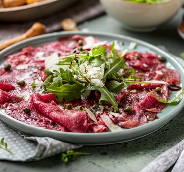

"Klassieke carpaccio maken als een échte Italiaan? Met mijn recept weet je zeker dat je een perfect voorgerecht op tafel zet."
Carpaccio dressing
1 tl balsamicoazijn
3 el citroensap
2 el olijfolie
zout
versgemalen peper
Carpaccio
400 g ossenhaas
75 g rucola
30 g pijnboompitten
30 g geraspte Parmezaanse kaas
bereidingsweize
Meng de azijn, citroensap en olie met een lepel door elkaar en breng op smaak met zout en peper.
Snijd de ossenhaas in dunne plakjes.
Rooster de pijnboompitten in een droge koekenpan en breng de rucola op smaak met de carpaccio dressing.
Verdeel de sla over borden en leg de carpaccio er op. Bestrooi met de pijnboompitten en enkele blaadjes rucola. Breng op smaak met peper en Parmezaanse kaas.

Tip Een lekker en makkelijk voorgerecht voor een echte liefhebber.